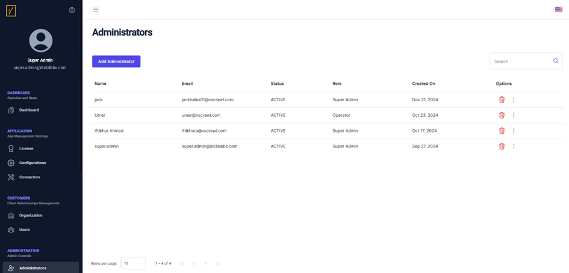

Add a New Administrator
Access the Administrators Page
Click on Administrators in the left navigation pane to view the list of existing administrators.

Manage Existing Administrators
- To delete an existing administrator, click the trash icon next to their name.
- To update an existing administrator, click the three dots and select Update Administrator.
Add a New Administrator
Click on the Add Administrator button to open the screen for creating a new administrator.
Provide Administrator Details
- Enter the Name, Email, and Password for the new administrator.
- Set the Status to Active.
- Choose the desired Role from the dropdown menu.
Tip: Assign a role that matches the responsibilities of the new administrator to ensure proper access control.